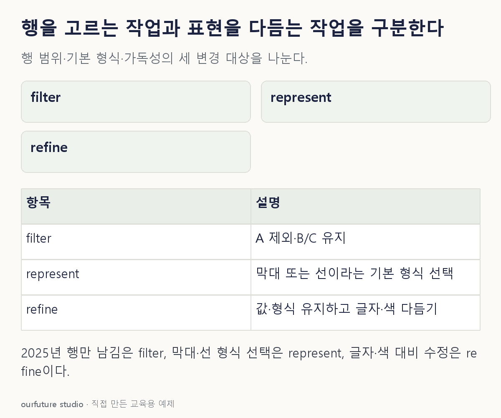

조건을 바꾸며 확인하기
Ben Fry의 정적인 제작 역할 비교다. 실제 UI에서 화면 필터 조작은 상호작용 기능과 함께 나타날 수 있다.
설명 그림과 비교하기
아래 그림과 표는 고정된 설명 예제입니다. 기본·변형 중 어떤 조건인지 캡션을 읽고, 바꾼 입력의 결과는 계산 칸에서 확인하세요.

같은 문제를 직접 골라 보기
작업 A는 매출표에서 2025년 행만 남긴다. 작업 B는 그 결과의 막대와 값을 유지하고 글자 크기·색 대비만 다듬는다. 정적인 제작 단계의 역할을 비교한다.
조건을 더 바꾸면?
같은 B·C 행을 사용하면서 막대그래프 대신 선그래프라는 기본 형식을 처음 선택한다. 글자·색만 다듬은 작업과 같은가?
변형 풀이 확인
다르다. 기본 표현 형태를 정하는 represent에 가깝다.
자료의 행은 그대로지만 시각적으로 값의 관계를 나타내는 기본 방식이 바뀐다. 실제 설계에서는 연결할 시간 순서가 있는지도 따로 확인한다.
행이 바뀌나, 보여주는 방식이 바뀌나.